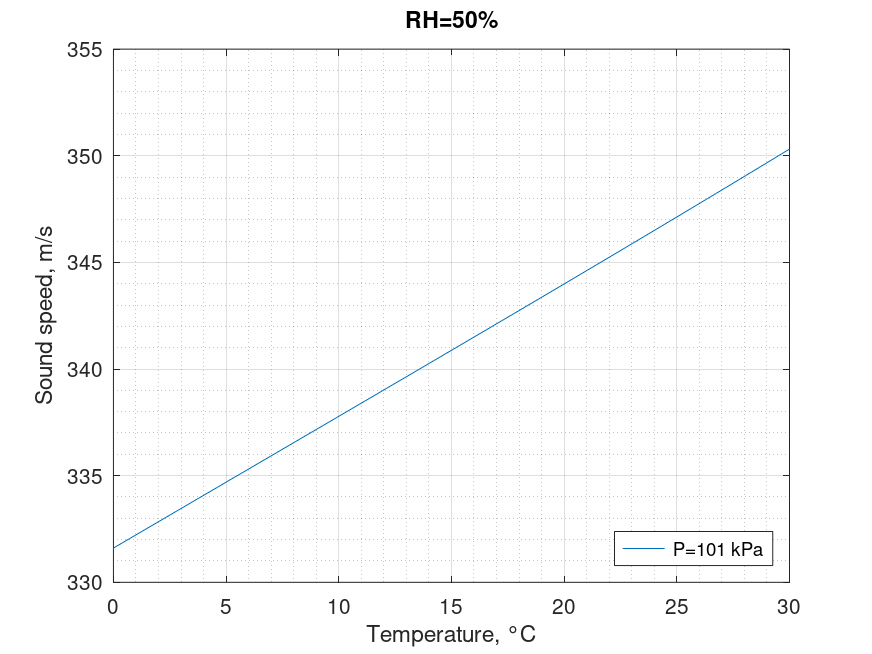

Sound speed in air. Cramer equation
Mathematical definition
Octave/Matlab implementation
function C = sound_speed_air_cramer(T,RH,P)
% Arguments
% T: temperature \ degree Celsius \ 0 < T < 30
% RH: relative humidity \ percentage
% P: pressure \ kPa \ 75 < P < 102
% Results
% C: speed of sound in air \ m/s
T_kel = T + 273.15;
P = P*1e3;
ENH = (3.14e-8)*P + 1.00062 + (T.^2)*(5.6e-7);
PSV1 = (T_kel.^2)*(1.2378847e-5) - (1.9121316e-2)*T_kel;
PSV2 = 33.93711047 - (6.3431645e3)./T_kel;
PSV = exp(PSV1).*exp(PSV2);
H = RH.*ENH.*PSV./P;
Xw = H/100.0;
Xc = 400e-6;
a0 = 331.5024; a1 = 0.603055; a2 = -0.000528; a3 = 51.471935;
a4 = 0.1495874; a5 = -0.000782; a6 = -1.82e-7; a7 = 3.73e-8;
a8 = -2.93e-10; a9 = -85.20931; a10 = -0.228525; a11 = 5.91e-5;
a12 = -2.835149; a13 = -2.15e-13; a14 = 29.179762; a15 = 0.000486;
C = a0 + a1*T + a2*(T.^2) + (a3 + a4*T + a5*(T.^2)).*Xw ...
+ (a6 + a7*T + a8*(T.^2)).*P + (a9 + a10*T+a11*(T.^2)).*Xc ...
+ a12*Xw.^2 + a13*(P.^2) + a14*(Xc.^2) + a15.*Xw.*P.*Xc;
end
Computational examples
